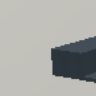
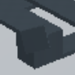

넓힌 source: 영상 해석에 원래 G42 조건을 더하면?
모든 수치는 저장된 source 출력입니다. 원래 초기 q/L, 전체 known D/E 분모와 보류 U를 유지했습니다. 실사 평가 향상·좌표 정확성 해결을 뜻하지 않습니다.
OLD_NATIVE / VALIDATION
| 모델 | CM [D,E]×[D,E,U] | D recall | E recall | D precision | E precision | U rate |
|---|
| C16 | [[819, 6, 3], [46, 13, 1]] | 98.91% | 21.67% | 94.68% | 68.42% | 0.45% |
| v61 | [[158, 667, 3], [7, 52, 1]] | 19.08% | 86.67% | 95.76% | 7.23% | 0.45% |
| C29 | [[808, 17, 3], [11, 48, 1]] | 97.58% | 80.00% | 98.66% | 73.85% | 0.45% |
| C30 | [[808, 17, 3], [11, 48, 1]] | 97.58% | 80.00% | 98.66% | 73.85% | 0.45% |
| C31 | [[809, 16, 3], [11, 48, 1]] | 97.71% | 80.00% | 98.66% | 75.00% | 0.45% |
C31−C30: {'known_DE': 888, 'delta_D_recall': 0.0012077294685990392, 'delta_E_recall': 0.0, 'D_and_E_nonregression': True, 'D_and_E_strict_joint_improvement': False, 'recovered': 2, 'regressed': 1, 'correct_both': 855, 'wrong_both': 30}
CONTINUOUS_NATIVE / VALIDATION
| 모델 | CM [D,E]×[D,E,U] | D recall | E recall | D precision | E precision | U rate |
|---|
| C16 | [[1756, 14, 2], [85, 45, 0]] | 99.10% | 34.62% | 95.38% | 76.27% | 0.11% |
| v61 | [[314, 1456, 2], [15, 115, 0]] | 17.72% | 88.46% | 95.44% | 7.32% | 0.11% |
| C29 | [[1714, 56, 2], [18, 112, 0]] | 96.73% | 86.15% | 98.96% | 66.67% | 0.11% |
| C30 | [[1714, 56, 2], [18, 112, 0]] | 96.73% | 86.15% | 98.96% | 66.67% | 0.11% |
| C31 | [[1718, 52, 2], [19, 111, 0]] | 96.95% | 85.38% | 98.91% | 68.10% | 0.11% |
C31−C30: {'known_DE': 1902, 'delta_D_recall': 0.0022573363431150906, 'delta_E_recall': -0.007692307692307776, 'D_and_E_nonregression': False, 'D_and_E_strict_joint_improvement': False, 'recovered': 8, 'regressed': 5, 'correct_both': 1821, 'wrong_both': 68}
기존에 고정한 8개 crop
C16 결과로 이미 선택한 사례입니다. C31 출력을 보고 고르지 않았고 저장 RGB96을 그대로 링크했습니다. GT 오차는 진단 표시이며 배포 필터가 아닙니다.
16616 / COVER
정답 E, q 오차 2.4373763082084867px
C16: D (-0.26383402943611145)
v61: E (3.4428467750549316)
C29: E (8.626514434814453)
C30: E (8.626514434814453)
C31: E (9.539643287658691)
16608 / BEFORE
정답 D, q 오차 2.3189077223596235px
C16: D (-11.966207504272461)
v61: E (2.466484308242798)
C29: D (-8.126632690429688)
C30: D (-8.126632690429688)
C31: D (-7.578199863433838)
18897 / NEAR_SHAM
정답 D, q 오차 2.5398788929060903px
C16: E (3.2669804096221924)
v61: D (-0.791824221611023)
C29: E (0.375567227602005)
C30: E (0.375567227602005)
C31: E (1.0091863870620728)
18881 / BEFORE
정답 D, q 오차 1.8499888214011617px
C16: D (-2.560138463973999)
v61: D (-0.060118526220321655)
C29: D (-4.537623882293701)
C30: D (-4.537623882293701)
C31: D (-4.330943584442139)
16937 / COVER
정답 E, q 오차 0.8749828174122021px
C16: D (-2.6094930171966553)
v61: E (3.7660391330718994)
C29: E (7.165132999420166)
C30: E (7.165132999420166)
C31: E (7.549374103546143)
16929 / BEFORE
정답 D, q 오차 0.8664148260654525px
C16: D (-11.971016883850098)
v61: E (2.1351866722106934)
C29: D (-9.336524963378906)
C30: D (-9.336524963378906)
C31: D (-9.010863304138184)
17320 / COVER
정답 E, q 오차 2.702099237732821px
C16: D (-5.049877166748047)
v61: E (4.440032958984375)
C29: E (2.903128147125244)
C30: E (2.903128147125244)
C31: E (2.587341785430908)
17312 / BEFORE
정답 D, q 오차 1.892989894410479px
C16: D (-8.557015419006348)
v61: E (0.09210047125816345)
C29: D (-9.176011085510254)
C30: D (-9.176011085510254)
C31: D (-10.19761848449707)
같은 물리 코너의 4 variant 두 묶음
이미지마다 초기 q와 L도 달라집니다. 고정 q 개입이나 좌표 오차의 인과 효과로 해석하지 않습니다.
base 519 / native 0
BEFORE
정답 D, q 오차 2.319px
C16: D (-11.966207504272461)
v61: E (2.466484308242798)
C29: D (-8.126632690429688)
C30: D (-8.126632690429688)
C31: D (-7.578199863433838)
COVER
정답 E, q 오차 2.437px
C16: D (-0.26383402943611145)
v61: E (3.4428467750549316)
C29: E (8.626514434814453)
C30: E (8.626514434814453)
C31: E (9.539643287658691)
NEAR_SHAM
정답 D, q 오차 11.545px
C16: D (-6.7091240882873535)
v61: E (3.531428813934326)
C29: D (-5.347774028778076)
C30: D (-5.347774028778076)
C31: D (-4.99800443649292)
FAR_SHAM
정답 D, q 오차 2.51px
C16: D (-12.101533889770508)
v61: E (2.470557451248169)
C29: D (-8.742453575134277)
C30: D (-8.742453575134277)
C31: D (-8.193251609802246)
base 590 / native 1
BEFORE
정답 D, q 오차 1.85px
C16: D (-2.560138463973999)
v61: D (-0.060118526220321655)
C29: D (-4.537623882293701)
C30: D (-4.537623882293701)
C31: D (-4.330943584442139)
COVER
정답 E, q 오차 3.699px
C16: E (1.1617622375488281)
v61: E (0.16325676441192627)
C29: E (6.073758602142334)
C30: E (6.073758602142334)
C31: E (6.717534065246582)
NEAR_SHAM
정답 D, q 오차 2.54px
C16: E (3.2669804096221924)
v61: D (-0.791824221611023)
C29: E (0.375567227602005)
C30: E (0.375567227602005)
C31: E (1.0091863870620728)
FAR_SHAM
정답 D, q 오차 2.184px
C16: D (-3.2979586124420166)
v61: D (-0.03804340958595276)
C29: D (-4.065832138061523)
C30: D (-4.065832138061523)
C31: D (-3.990093231201172)
전체 CF/V4 민감도·위치오차·재질·모양·외부 물체별 CM/P/R/U 및 64개 gate